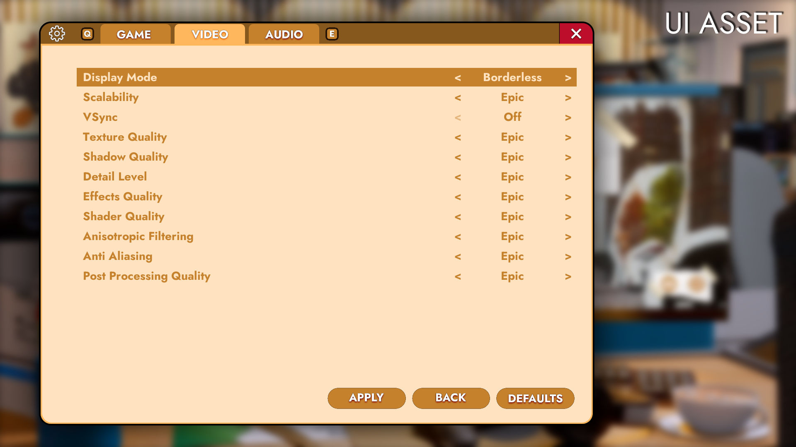
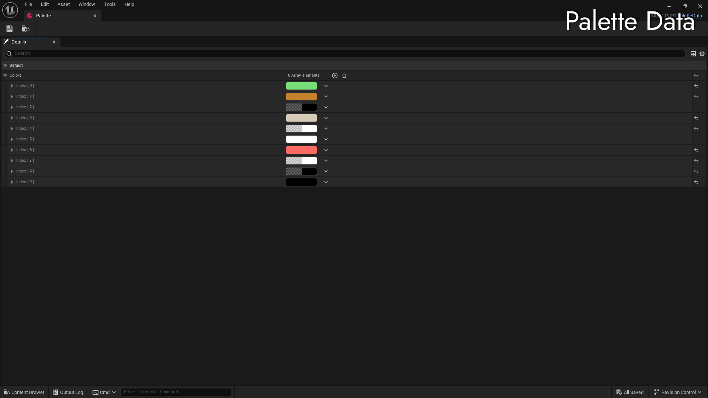

Phantom Blaze
Senior Game Programmer (Shipped)
*Due to NDA restrictions, proprietary assets cannot be shown. Assets shown utilize proxy content to showcase an overview of work done.
Backend Engineering
Custom REST API Integration
The Challenge: The game required persistent player progression (Loadouts, Stats, Match Scores). The client needed to synchronize complex data with a custom backend without blocking the game thread.
The Solution: I engineered a C++ HTTP Subsystem to manage the full data lifecycle.
- Async Communication: Implemented asynchronous GET/POST requests to serialize and deserialize JSON data for Player Profiles and Match History.
- Full-Stack Implementation: I handled the entire pipeline; from parsing the raw API response to populating the Lobby, Loadout and End-of-Match UI.
Result: Achieved seamless data persistence, allowing players to customize loadouts and view real-time stats with zero UI freezing or hitching.
Systems Architecture
Data-Driven UI Framework
The Challenge: ard-coding visual properties into Blueprints meant that simple re-brands (changing themes or logos) required editing dozens of files, making iteration slow and error-prone.
The Solution: I engineered a modular architecture using C++ Base Classes and Data Assets to separate Logic from Presentation.
- Logic in C++: Core functionality is handled in code, exposing only safe properties to the Editor.
- Centralized Theming: Visuals are driven by a Global Data Asset. Changing a logo or color in this one asset propagates to every widget instantly.
Result: This turned a complex re-skinning task into a "one-stop process," empowering designers to update the game's look without engineering support.

